Animated charts for Rust dashboards
Charts that draw in and respond to the pointer: line, area, bar, pie and donut, radar, radial, gauges, sparklines, scatter, heatmaps and calendar heatmaps, funnels, treemaps, candlesticks, Sankey diagrams and KPI tiles.
All Charts components

Line Chart
ChartsMulti-series lines that draw in, with a snapping crosshair tooltip, clickable legend, glow, gradient and dashed variants.

Area Chart
ChartsGradient-filled areas that rise from the baseline: overlapping, stacked and expanded to 100%, with a dataset switch that animates.

Bar Chart
ChartsBars that grow in with a stagger: grouped, stacked, horizontal, negative values, value labels, hover highlight and animated striped fills.

Pie & Donut Chart
ChartsSlices sweep in; the hovered slice pops out; donuts show a center total that follows the hovered slice; padding, labels and rounded ends.
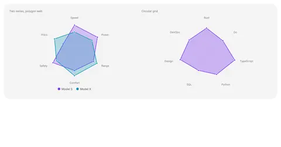
Radar Chart
ChartsTranslucent polygons unfold from the center over a web grid; hover an axis to compare series.

Radial Bar Chart
ChartsConcentric rings sweep in one after another over faint tracks, with labels at each ring's start.

Gauge
ChartsSemicircular gauges with a gradient arc, tick marks and a needle that springs to its value.

Sparkline
ChartsTiny line, area and bar charts for tables and cards.
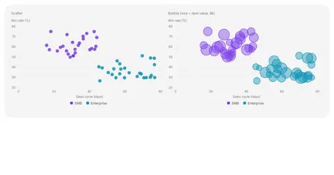
Scatter & Bubble Chart
ChartsPoints and size-scaled bubbles pop in with a stagger; the nearest point is ringed with a tooltip.

Heatmap
ChartsA labelled matrix whose cells fade in along a diagonal, with a color key and hover tooltips.
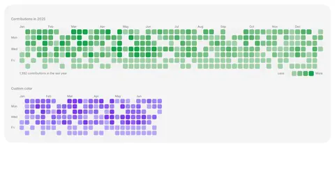
Calendar Heatmap
ChartsA GitHub-style contribution graph: a year of days in weekly columns with five levels, month labels and day tooltips.
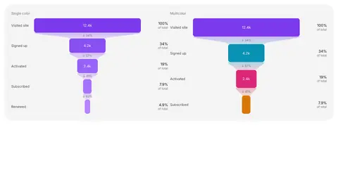
Funnel Chart
ChartsConversion stages as centered bars joined by smooth tapered bands, with drop-off and share of total.
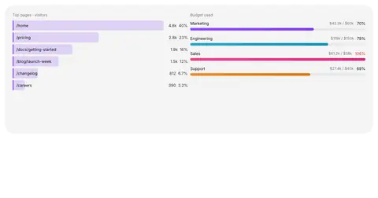
Bar List & Progress List
ChartsRanked horizontal bars with labels inside and values on the right, plus labelled progress bars against targets.
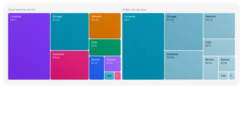
Treemap
ChartsA squarified treemap whose tiles scale in by size, with labels that appear when they fit.
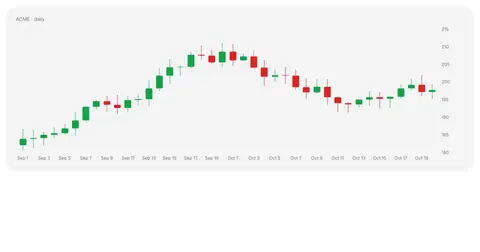
Candlestick Chart
ChartsOHLC candles growing from their midpoints, with a price-tagged crosshair and an OHLC tooltip.
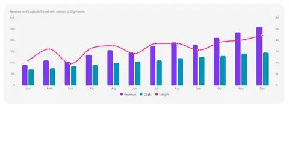
Combo Chart
ChartsColumns and a glowing line sharing categories, optionally on two y axes.
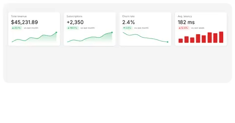
KPI Stat Tile
ChartsKPI cards with a counting number, a colored delta badge and a sparkline.
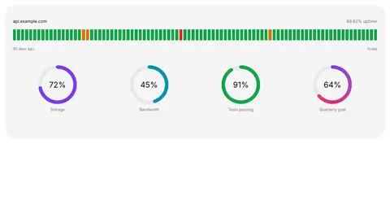
Tracker & Donut Progress
ChartsA status tracker of colored blocks with tooltips (uptime), and circular progress rings.
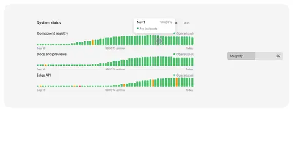
Uptime Bars
ChartsDaily status strips per service; scrub a row and bars swell in a fisheye under a gliding tooltip, while range changes cascade and the uptime counts.
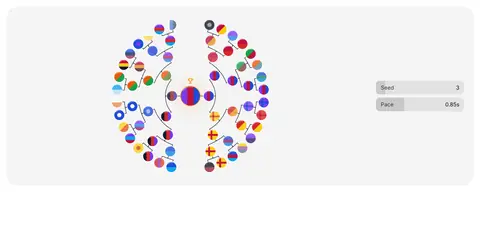
Knockout Bracket
ChartsA round tournament draw: badges ring the outside and winners fly inward round by round until the champion lands glowing in the middle. Hover a team to trace its road.
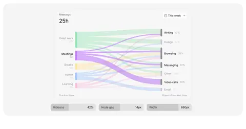
Sankey Chart Card
ChartsA true sankey in a calm dashboard card: pill nodes sized by flow, smooth ribbons as thick as their value, hover to isolate a node or a ribbon.
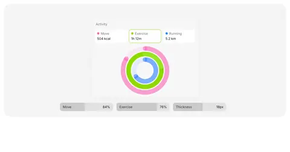
Activity Rings Card
ChartsConcentric goal rings under three stat tiles: rings sweep in with a stagger, lap past 100%, and hovering a ring or tile focuses it.
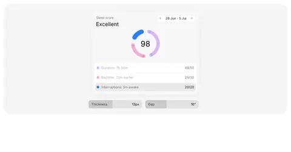
Sleep Score Card
ChartsA segmented ring gauge around a count-up score: one arc per sub-score, weeks paged with the date pill, hovering a row thickens its arc.

Most Active Days Card
ChartsA scrolling month calendar of mini activity rings with a month switcher; the selected day drives a full rings card beside it.
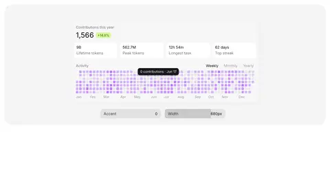
Contributions Card
ChartsA year of activity as a 53-week heat grid under a headline and stat tiles; tabs re-aggregate with a diagonal colour ripple and cells show their day on hover.
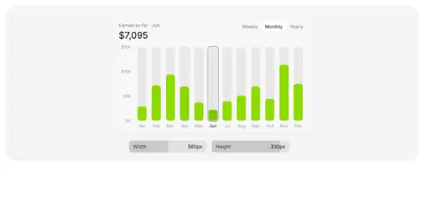
Earnings Chart Card
ChartsRounded pill bars over a money axis with a Weekly / Monthly / Yearly switch that regrows the bars, a count-up headline and an outline on the hovered bar.

Steps Card
ChartsSeven teal pill bars under a count-up step total; the date pill pages through weeks and the hovered day gets an outline while the headline follows.

Orders Chart Card
ChartsMonthly orders as this-year bars beside last-year bars; the headline counts up with a delta chip and hovering a month swaps in that month's figures.

Stage Bars Card
ChartsA funnel as a list of rounded pills with value and share of the top stage, plus stat tiles; widths grow in and hovering a stage deepens it and fades the rest.